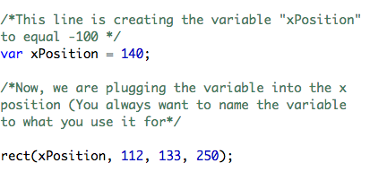
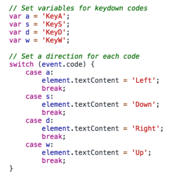
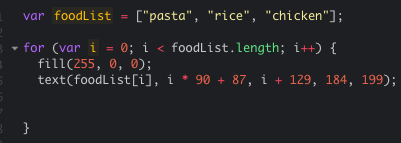

JavaScript (JS)
JavaScript is a powerful/complicated programming language (unlike HTML and CSS). It's mainly used for web design. JS can add things like user interaction and authentication.
Since it's an actual programming language, it can do also add variables, arrays, functions, objects, and even more.
JavaScript adds functionality and interaction to websites to engage users. Even though it's mainly used for web design alongside HTML and CSS, it can be used to a greater extent.
JS Libraries
JS libraries are files that add functions to complete a task, instead of writing uneeded code. Functions are a block of reusable code used to perform an action. For example, ProcessingJS is a library that makes drawing and animation easier. It uses functions like:
rect(x, y, length, width);
text(" ");
Functions like these make writing code much quicker. However, these functions aren't universal in JS (meaning you can't use them without the library).
Code
Variables are used everywhere in code. You may have heard of variables in math class which is the same thing. A variable is a placeholder for a value. This is an example of stating and calling a variable. (Note: All of the green text are comments. This is not part of the code.)
In webpages, JS can create user events. For example, if a user clicked on a box, another box could change color.
In this code, each variable is expressing a key press, and each key press produces an event.
This is an example of a for loop and an array. Loops are needed when you need to copy the same code over and over again, and arrays are needed when you have to store multiple variables.
In for loops, you start with a variable (where the content starts.) Then, you add how long the for loop will run, using a condition. Conditions are usually inequalities or booleans (true, false). In this example, the variable "i" will run until it's equal the array's length. Everytime the for loop runs, it will add 1 to "i".
The reason this works is because variables in arrays are defined starting at 0, not 1. So, the length of the array would be 3, but the ending variable is defined as 2, meaning that "i" will stop at 2 and list all of the foods.
The output would be the list of foods running across the x axis.
I know, it's complicated. And, those were only three examples of JS code, using 1 library. There are so many more uses of JS; that's why it is such a powerful programming language.